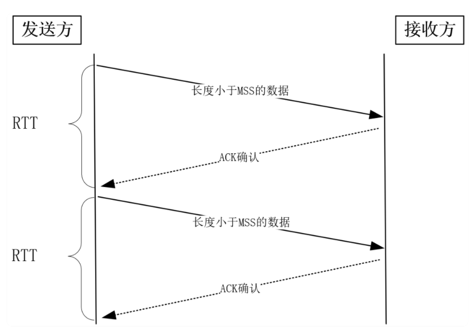
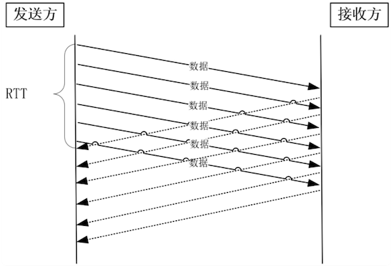

第五节 TCP缓冲区兼顾并发数量与传输速度
在 Linux 系统中用 free 命令查看内存占用情况，会发现一栏叫做 buff/cache，它是系统内存，似乎与应用进程无关。
但每当进程新建一个 TCP 连接，buff/cache 中的内存都会上升 4K 左右。而且，当连接传输数据时，就远不止增加 4K 内存了。这样，几十万并发连接，就在进程内存外又增加了 GB 级别的系统内存消耗。
这是因为 TCP 连接是由内核维护的，内核为每个连接建立的内存缓冲区，既要为网络传输服务，也要充当进程与网络间的缓冲桥梁。
如果连接的内存配置过小，就无法充分使用网络带宽，TCP 传输速度就会很慢；如果连接的内存配置过大，那么服务器内存会很快用尽，新连接就无法建立成功。因此，只有深入理解 Linux 下 TCP 内存的用途，才能正确地配置内存大小。
1、滑动窗口是怎样影响传输速度的？
TCP 必须保证每一个报文都能够到达对方，它采用的机制就是：报文发出后，必须收到接收方返回的 ACK 确认报文（Acknowledge 确认的意思）。如果在一段时间内（称为 RTO，retransmission timeout）没有收到，这个报文还得重新发送，直到收到 ACK 为止。
可见，TCP 报文发出去后，并不能立刻从内存中删除，因为重发时还需要用到它。
由于 TCP 是由内核实现的，所以报文存放在内核缓冲区中，这也是高并发下 buff/cache 内存增加很多的原因。
如果我们发送一个报文，收到 ACK 确认后，再发送下一个报文，会有什么问题？
显然，发送每个报文都需要经历一个 RTT 时延（RTT 的值可以用 ping 命令得到）。要知道，因为网络设备限制了报文的字节数，所以每个报文的体积有限。
比如，以太网报文最大只有 1500 字节，而发送主机到接收主机间，要经历多个广域网、局域网，其中最小的设备决定了网络报文的最大字节数，在 TCP 中，这个值叫做 MSS（Maximum Segment Size），它通常在 1KB 左右。如果 RTT 时延是 10ms，那么它们的传送速度最多只有 1KB/10ms=100KB/s！可见，这种确认报文方式太影响传输速度了。

提速的方式很简单，并行地批量发送报文，再批量确认报文即可。
然而，这引出了另一个问题，接收方有那么强的处理能力吗？接收方的处理能力，这是影响确认机制的第二个因素。

当接收方硬件不如发送方，或者系统繁忙、资源紧张时，是无法瞬间处理这么多报文的。于是，这些报文只能被丢掉，网络效率非常低。怎么限制发送方的速度呢？
接收方把它的处理能力告诉发送方，使其限制发送速度即可，这就是滑动窗口的由来
- 接收方根据它的缓冲区，可以计算出后续能够接收多少字节的报文，这个数字叫做接收窗口。
- 当内核接收到报文时，必须用缓冲区存放它们，这样剩余缓冲区空间变小，接收窗口也就变小了
- 当进程调用 read 函数后，数据被读入了用户空间，内核缓冲区就被清空，这意味着主机可以接收更多的报文，接收窗口就会变大。
接收窗口并不是恒定不变的，那么怎么把时刻变化的窗口通知给发送方呢？TCP 报文头部中的窗口字段，就可以起到通知的作用。
当发送方从报文中得到接收方的窗口大小时，就明白了最多能发送多少字节的报文，这个数字被称为发送方的发送窗口。
扩充窗口的方法,但 Linux 中打开这一功能，需要把 tcp_window_scaling 配置设为 1，此时窗口的最大值可以达到 1GB（230）。
net.ipv4.tcp_window_scaling = 1
这样看来，只要进程能及时地调用 read 函数读取数据，并且接收缓冲区配置得足够大，那么接收窗口就可以无限地放大，发送方也就无限地提升发送速度。
很显然，这是不可能的，因为网络的传输能力是有限的，当发送方依据发送窗口，发送超过网络处理能力的报文时，路由器会直接丢弃这些报文。因此，缓冲区的内存并不是越大越好。
2、带宽时延积如何确定最大传输速度？
TCP 的传输速度，受制于发送窗口与接收窗口，以及网络传输能力。
其中，两个窗口由缓冲区大小决定（进程调用 read 函数是否及时也会影响它）。如果缓冲区大小与网络传输能力匹配，那么缓冲区的利用率就达到了最大值。
怎样计算出网络传输能力呢？
带宽描述了网络传输能力，但它不能直接使用，因为它与窗口或者说缓冲区的计量单位不同。带宽是单位时间内的流量 ，它表达的是速度，比如你家里的宽带 100MB/s，而窗口和缓冲区的单位是字节。当网络速度乘以时间才能得到字节数，差的这个时间，这就是网络时延。
当最大带宽是 100MB/s、网络时延是 10ms 时，这意味着客户端到服务器间的网络一共可以存放 100MB/s * 0.01s = 1MB 的字节。这个 1MB 是带宽与时延的乘积，所以它就叫做带宽时延积（缩写为 BDP，Bandwidth Delay Product）。这 1MB 字节存在于飞行中的 TCP 报文，它们就在网络线路、路由器等网络设备上。如果飞行报文超过了 1MB，就一定会让网络过载，最终导致丢包。
由于发送缓冲区决定了发送窗口的上限，而发送窗口又决定了已发送但未确认的飞行报文的上限，因此，发送缓冲区不能超过带宽时延积，因为超出的部分没有办法用于有效的网络传输，且飞行字节大于带宽时延积还会导致丢包；而且，缓冲区也不能小于带宽时延积，否则无法发挥出高速网络的价值。
3、怎样调整缓冲区去适配滑动窗口？
时刻让缓冲区保持最大，太过浪费内存了。
因为不是每一个请求都能够达到最大传输速度，比如请求的体积太小时，在慢启动（下一讲会谈到）的影响下，未达到最大速度时请求就处理完了。再比如网络本身也会有波动，未必可以一直保持最大速度。
到底该如何设置缓冲区呢？
可以使用 Linux 的缓冲区动态调节功能解决上述问题。其中，缓冲区的调节范围是可以设置的。先来看发送缓冲区，它的范围通过 tcp_wmem 配置：
net.ipv4.tcp_wmem = 4096 16384 4194304
其中，第 1 个数值是动态范围的下限，第 3 个数值是动态范围的上限。而中间第 2 个数值，则是初始默认值。
发送缓冲区完全根据需求自行调整。比如，一旦发送出的数据被确认，而且没有新的数据要发送，就可以把发送缓冲区的内存释放掉。而接收缓冲区的调整就要复杂一些，先来看设置接收缓冲区范围的 tcp_rmem：
net.ipv4.tcp_rmem = 4096 87380 6291456
它的数值与 tcp_wmem 类似，第 1、3 个值是范围的下限和上限，第 2 个值是初始默认值。发送缓冲区自动调节的依据是待发送的数据，接收缓冲区由于只能被动地等待接收数据，它该如何自动调整呢？
可以依据空闲系统内存的数量来调节接收窗口。如果系统的空闲内存很多，就可以把缓冲区增大一些，这样传给对方的接收窗口也会变大，因而对方的发送速度就会通过增加飞行报文来提升。反之，内存紧张时就会缩小缓冲区，这虽然会减慢速度，但可以保证更多的并发连接正常工作。
发送缓冲区的调节功能是自动开启的，而接收缓冲区则需要配置 tcp_moderate_rcvbuf 为 1 来开启调节功能：
net.ipv4.tcp_moderate_rcvbuf = 1
接收缓冲区调节时，怎么判断空闲内存的多少呢？这是通过 tcp_mem 配置完成的：
net.ipv4.tcp_mem = 88560 118080 177120
tcp_mem 的 3 个值，是 Linux 判断系统内存是否紧张的依据。当 TCP 内存小于第 1 个值时，不需要进行自动调节；在第 1 和第 2 个值之间时，内核开始调节接收缓冲区的大小；大于第 3 个值时，内核不再为 TCP 分配新内存，此时新连接是无法建立的。
在高并发服务器中，为了兼顾网速与大量的并发连接，我们应当保证缓冲区的动态调整上限达到带宽时延积，而下限保持默认的 4K 不变即可。而对于内存紧张的服务而言，调低默认值是提高并发的有效手段。
同时，如果这是网络 IO 型服务器，那么，调大 tcp_mem 的上限可以让 TCP 连接使用更多的系统内存，这有利于提升并发能力。需要注意的是，tcp_wmem 和 tcp_rmem 的单位是字节，而 tcp_mem 的单位是页面大小。而且，千万不要在 socket 上直接设置 SO_SNDBUF 或者 SO_RCVBUF，这样会关闭缓冲区的动态调整功能。
4、本节小结
实现高并发服务时，由于必须把大部分内存用在网络传输上，所以除了关注应用内存的使用，还必须关注 TCP 内核缓冲区的内存使用情况。
TCP 使用 ACK 确认报文实现了可靠性，又依赖滑动窗口既提升了发送速度也兼顾了接收方的处理能力。然而，默认的滑动窗口最大只能到 65KB，要想提升发送速度必须提升滑动窗口的上限，在 Linux 下是通过设置 tcp_window_scaling 为 1 做到的。
滑动窗口定义了飞行报文的最大字节数，当它超过带宽时延积时，就会发生丢包。而当它小于带宽时延积时，就无法让 TCP 的传输速度达到网络允许的最大值。因此，滑动窗口的设计，必须参考带宽时延积。
内核缓冲区决定了滑动窗口的上限，但我们不能通过 socket 的 SO_SNFBUF 等选项直接把缓冲区大小设置为带宽时延积，因为 TCP 不会一直维持在最高速上，过大的缓冲区会减少并发连接数。Linux 带来的缓冲区自动调节功能非常有效，我们应当把缓冲区的上限设置为带宽时延积。其中，发送缓冲区的调节功能是自动打开的，而接收缓冲区需要把 tcp_moderate_rcvbuf 设置为 1 来开启，其中调节的依据根据 tcp_mem 而定。
这样高效地配置内存后，既能够最大程度地保持并发性，也能让资源充裕时连接传输速度达到最大值
带宽描述了网络传输能力，但它不能直接使用，因为它与窗口或者说缓冲区的计量单位不同。带宽是单位时间内的流量 ，它表达的是速度，比如你家里的宽带 100MB/s，而窗口和缓冲区的单位是字节。当网络速度乘以时间才能得到字节数，差的这个时间，这就是网络时延。